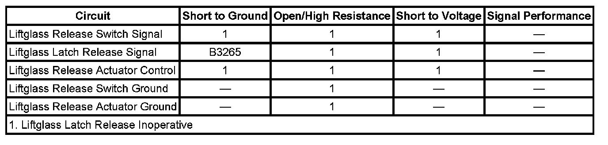

Rear Window Release Inoperative
REAR WINDOW RELEASE INOPERATIVE
DIAGNOSTIC FAULT INFORMATION

Perform the Diagnostic System Check - Vehicle prior to using this diagnostic procedure. Initial Inspection and Diagnostic Overview
CIRCUIT/SYSTEM DESCRIPTION
The liftglass release switch is an input to the body control module (BCM). The BCM supplies battery voltage to the signal circuit and when the release switch is activated the signal circuit voltage goes low. The BCM controls the liftglass release actuator through the rear wiper motor control module. When the release switch signal is activated the BCM applies battery voltage to the liftglass latch release signal circuit. The rear wiper motor control module supplies voltage to the release actuator through the liftglass release actuator control circuit.
CIRCUIT/SYSTEM VERIFICATION
1. Install a scan tool and display Liftglass Release Switch parameter in the BCM Inputs data list.
2. Ignition ON, the parameter should be active only when the release switch is activated.
- If the scan tool parameter does not display the actual switch state perform the Liftglass Release Switch Circuit Test.
3. Attempt to activate the Liftglass Release Actuator form the scan tool BCM output controls.
- If the liftglass release actuator can not be activated using the scan tool output controls function perform the Liftglass Release Output Circuit Test.
- If the release switch input and the actuator output both function properly, another BCM input may be preventing the liftglass release action from being performed.
CIRCUIT/SYSTEM TESTING
Liftglass Release Switch Circuit Test
1. Disconnect the BCM connector C6.
2. Connect a test lamp from battery voltage to the liftglass release switch circuit terminal in the harness connector.
3. Verify the test lamp is not illuminated while the release switch is inactive.
- If the test lamp remains illuminated the signal circuit is shorted to ground or the switch contacts are shorted closed.
4. Verify the test lamp is illuminated while the release switch is active.
- If the test lamp does not illuminate an open is present in the signal circuit, switch or ground.
5. If the release switch circuits test normal replace the BCM.
Liftglass Release Output Circuit Test
1. Disconnect the rear wiper motor connector.
2. Ignition ON, verify that battery voltage is present on the liftglass latch release signal circuit while the liftglass release switch is activated.
- If battery voltage is not present, test the liftglass latch release signal circuit for an open or high resistance. If the circuit tests normal replace the BCM.
3. Connect the rear wiper motor connector.
4. Disconnect the liftglass latch actuator connector. Connect a test lamp from the latch actuator control circuit terminal to the ground circuit terminal in the harness connector.
5. Verify that the test lamp illuminates when the liftglass release switch is activated.
- If the test lamp does not illuminate test the control and ground circuits for an open or short to ground. If the circuits test normal replace the rear wiper motor module.
6. If the liftglass release output circuits test normal replace the liftglass latch release actuator.
REPAIR INSTRUCTIONS
Perform the Diagnostic Repair Verification after completing the diagnostic procedure. Verification Tests